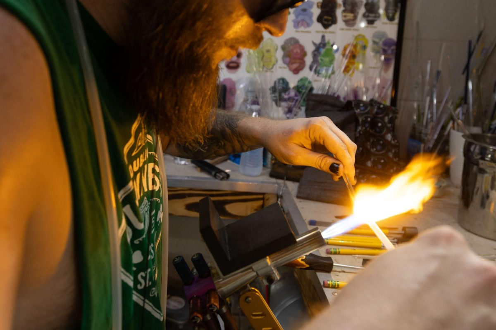
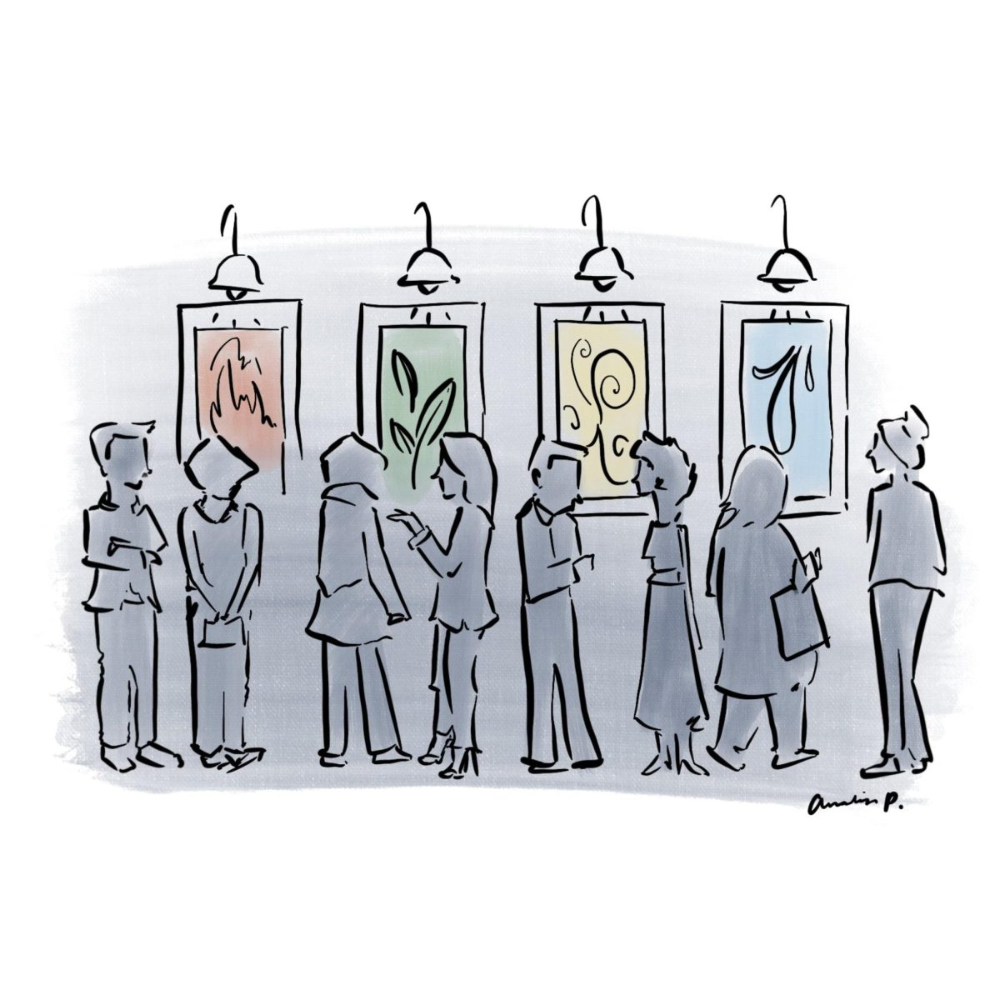

Once the clock struck 8:29 p.m. on Saturday, the Paramount Theatre’s house lights dimmed, and audience members turned their heads toward a white light revealing a line of dancers in the theater aisle. As the dancers...



Once the clock struck 8:29 p.m. on Saturday, the Paramount Theatre’s house lights dimmed, and audience members turned their heads toward...